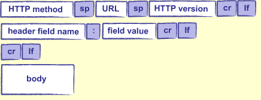

Servidor HTTP com netcat e bash
mg;nl: Escrevi um relato dos meus estudos tentando criar um servidor com o comando netcat e outras ferramentas básicas do terminal, que consiga lidar com requisições GET, POST e validar o corpo das requisições.
Como parte de um projeto de fim de semana, precisei criar um servidor HTTP. Como estou estudando o uso da linha de comandos e scripts em bash, achei digno tentar criar um servidor que processasse o protocolo http "do zero" usando ferramentas básicas do terminal, como netcat, read, mkfifo, sed, cut e outros.
Dei uma pesquisada e achei projetos bem avançados, como o totally simple web server, mas nenhum deles tinha suporte para requisições POST, para envio de informações mais complexas.
Decidi por fazer minha implementação com o seguinte escopo:
- O servidor deve processar HTTP na versão 1.1.
- O servidor deve lidar com requisições GET e POST, e deve ser estensível para outros verbos http (PUT, PATCH, DELETE...) sem muita alteração na lógica.
- O servidor deve ser capaz de processar o corpo das requisições e retornar respostas dinâmicas, com regra de negócio customizável.
Como prova de conceito, implementei um endpoint GET que retorna um status de sucesso e um endpoint POST que recebe uma URL e verifica se ela é um link válido.
Você pode ver o código completo neste gist.
Endpoint raíz
O protocolo HTTP é construido em cima do protocolo TCP. A ferramenta básica pra lidar com TCP pelo terminal é o netcat (o canivete suíço do TCP), e grande parte da funcionalidade que precisamos já existe no programa.
O comando nc
Podemos usar o nc pra ouvir uma porta arbitrária na máquina e começar as comunicações.
# flag -l indica que queremos ouvir (listen) na porta estipulada
nc -l localhost 18000
Em um segundo terminal, você pode testar que a porta foi ativada estabelecendo uma conexão e enviando uma mensagem.
nc localhost 18000
"Hello from terminal 2"
Repare que a mensagem foi recebida no servidor. E essa comunicação é bilateral: qualquer coisa enviada em um terminal, vai pro outro.
O próximo passo é reagir às mensagens enviadas, e não só repetí-las. Para isso, vamos usar o conceito de named pipes no linux.
Eles funcionam como os pipes normais (|), ou seja, representam uma futura comunicação entre a saída de um programa e a entrada de outro, mas possuem um nome específico e são atrelados a um arquivo.
O comando mkfifo
O comando utilizado pra criar um named pipe é mkfifo.
$ mkfifo my-pipe
$ ls -l my-pipe
prw-rw-r-- 1 guites guites 0 mar 5 01:52 my-pipe
Repare o p antes das permissões do arquivo, indicando que se trata de um pipe.
O vídeo abaixo ilustra o comportamento dos pipes.
Repare que ao escrever no pipe os terminais ficam bloqueados. Você pode imaginar que cada terminal será desbloqueado quando seu valor for lido do pipe, mas quando o processo de leitura inicia, os dois terminais de escrita são desbloqueados ao mesmo tempo.
Outro detalhe importante é que o valor "second test" é usado primeiro na leitura do que "first test", ou seja, ordem contrária à qual foram adicionados (o named pipe funciona como uma pilha, ou stack).
Estruturando o consumo dos pipes com netcat
Vamos utilizar uma arquitetura proposta por Dave Fletcher para processar, no server, os valores recebidos pelo netcat antes de devolvê-los.
+----------+
| nc client|
+----------+
^
|
|
v
+---------+(1)
|nc server|---writes to --> FIFO pipe
+---------+ |
(0)^ |
| is read by
| |
| |
| v
+------------------- callback
function
- 1: saída do `nc server`, com a mensagem recebida do client
- 0: entrada do `nc server`, com os valores prontos pra serem enviados
de volta pro client
O servidor vai escrever cada mensagem recebida no pipe. Enquanto isso, a função de callback roda paralelamente e lê os valores adicionados ao pipe, processando-os e enviando de volta pro servidor, que os envia para o cliente.
Graças ao efeito "bloqueador" dos named pipes (quem escreve fica bloqueado até que ocorra uma leitura), o callback vai rodar exatamente uma vez para cada valor adicionado na fila.
Vamos começar com uma versão simplificada.
mkfifo test-pipe
nc -kl 18000 \
0< <(while read -r line; do echo "Você enviou: $line"; done < "test-pipe") \
1> >(while : ; do cat - > "test-pipe"; done)
Primeiro, criamos nosso pipe. Depois, iniciamos o server ouvindo na porta 18000, e então definimos os valores de entrada e saída do programa.
No primeiro loop, (onde temos o 0<) estamos dizendo que o valor de entrada (STDIN) deve ser definido pela função
while read -r line; do echo "Você enviou: $line"; done < "test-pipe"
Ou seja, o valor que entra no servidor vai ser lido da fila e processado, e depois enviado para o client.
No segundo loop (onde temos o 1>), estamos dizendo que o valor de saída (STDOUT), que são as mensagens recebidas no server (enviadas pelo client), devem ser enviadas para a fila.
Isso mantém o processo sincronizado (é feita uma escrita seguida de uma leitura), mesmo com dois loops ocorrendo simultaneamente.
Evoluindo para HTTP
Agora que controlamos os valores devolvidos para o client, podemos processá-los com a lógica necessária.
Caso nosso client continuasse um nc, fazendo requisições TCP simples, poderíamos manter o processamento de uma linha por vez.
Mas as requisições vão chegar falando HTTP. Pra entender como nosso programa se comporta nesse caso, podemos simular uma requisição com curl.
Com o server rodando em um terminal, vamos abrindo um segundo terminal e
$ curl http://localhost:18000
curl: (1) Received HTTP/0.9 when not allowed
Esse erro indica que o curl considera nossa resposta mal formatada. De fato, o protocolo HTTP tem um padrão bem específico. Uma requisição GET HTTP vai ter a seguinte estrutura:
GET /hello.txt HTTP/1.1 <-- Request-Line
Host: www.example.com <-- Host do destinatário
Accept-Language: en, mi <--- headers (um ou mais)
<-- linha em branco!
A primeira linha é a mais importante e define três valores: o verbo utilizado (GET, POST, PUT..), o recurso a ser acessado no servidor e a versão do protocolo utilizada.
Se tratando de HTTP, nossa resposta deve conter obrigatóriamente alguns campos, assim como a requisição.
A estrutura básica para uma resposta bem sucedida é:
http/1.1 200 ok
server: netcat
content-length: 123
content-type: text; charset=utf-8
connection: close
# <!-- linha em branco!
A primeira linha indica que tudo ocorreu bem, e o status de saída é um 200 (OK).
Depois, temos uma identificação básica do server, que aceita qualquer string.
content-length define o tamanho do corpo da resposta da requisição. Esse campo vai instruir quantos bytes o cliente que buscou a URL deve aguardar na resposta. Caso este valor não esteja presente, ou você coloque um valor maior do que o enviado, o cliente pode ficar aguardando no outro lado da conexão por tempo indeterminado.
content-type indica qual o formato da saída. Aqui, mantemos "text" pela simplicidade, mas poderiamos usar "text/html" para html ou "application/json" para JSON. Em seguida, definimos o padrão de codificação do conteúdo da resposta (o charset).
connection indica se a requisição deve ser mantida após a transferência do número de bytes especificado em content-length. Os navegadores utilizam isso para agilizar o download de diferentes recursos, diminuindo a quantidade de etapas necessárias na comunicação. Vamos utilizar close pra indicar que nossa comunicação é fechada a cada requisições.
Vamos formatar os cabeçalhos da nossa resposta em uma função separada:
http_response() {
printf $'HTTP/1.1 200 ok\r\n'
printf $'Content-Length: 0\r\n'
printf $'Content-Type: text/plain\r\n'
printf $'Connection: close\r\n'
printf $'\r\n'
}
Repare que todos os valores acabam com \r\n. Esse é o fim de linha (CR-LF) utilizado no padrão http.
In HTTP version 1.x, header fields are transmitted after the request line (in case of a request HTTP message) or the response line (in case of a response HTTP message), which is the first line of a message. Header fields are colon-separated key-value pairs in clear-text string format, terminated by a carriage return (CR) and line feed (LF) character sequence. The end of the header section is indicated by an empty field line, resulting in the transmission of two consecutive CR-LF pairs. fonte: 1, 2
Ou seja, sabemos que o corpo da requisição vai começar quando recebermos dois CR-LF (conjuntos de \r\n) seguidos, indicando que uma das linhas estava em branco:
...
Connection: close\r\n
\r\n
Logo mais vamos filtrar os \r das linhas, o que vai nos permitir verificar com qual parte da requisição estamos lidando baseado no fato de ser um linha vazia ou não.
Preparando a resposta no netcat
Vamos separar a lógica do tratamento da resposta em uma função generate_response: ela vai ser responsável por identificar a linha com o verbo http e decidir quando possui informações suficientes pra começar a enviar a resposta.
generate_response() {
local verb # restringe a variável ao escopo da função
verb="" # vamos usar essa variával pra decidir se já recebemos o verbo http
while read -r line; do
line="$(sed 's/\r//g' <<< "${line}")" # (1)
if [ -n "${line}" ]; then
if [ -z "${verb}" ]; then
# caso não tenhamos salvo o verbo HTTP ainda,
# estamos lidando com a Request Line, no formato
# POST / HTTP/1.1
read -r verb _ _ <<< "${line}"
continue
fi
else
# se cairmos aqui, signfica que recebemos uma linha vazia
# vamos enviar nossa resposta
http_response
# limpamos a variável verb para lidar com a próxima requisição
verb=""
fi
done < "$1"
}
Em (1), estamos removendo o \r das linhas (lembre-se que as linhas no HTTP acabam sempre em \r\n). Isso nos permite verificar se as linhas estão vazias ou não na hora de implementar nossa lógica.
Pra rodar o código de agora em diante, salve as funções http_response e generate_response, assim como a chamada ao nc em um arquivo separado. Você pode vê-lo na integra clicando abaixo.
Clique para ver o código completo do script.
#!/bin/bash
http_response() {
printf $'HTTP/1.1 200 ok\r\n'
printf $'Content-Length: 0\r\n'
printf $'Content-Type: text/plain\r\n'
printf $'Connection: close\r\n'
printf $'\r\n'
}
generate_response() {
local verb
verb=""
while read -r line; do
line="$(sed 's/\r//g' <<< "${line}")"
if [ -n "${line}" ]; then
if [ -z "${verb}" ]; then
read -r verb _ _ <<< "${line}"
continue
fi
else
http_response
verb=""
fi
done < "$1"
}
# sempre removemos o named pipe, se ele já existir
if [ -a "test-pipe" ]; then
rm test-pipe
fi
mkfifo test-pipe
nc -kl 18000 \
0< <(generate_response "test-pipe") \
1> >(while : ; do cat - > "test-pipe"; done)
Vou considerar que você colocou o código em server.bash.
Em um terminal, inicie o servidor com
bash server.bash
Em um segundo terminal, faça uma requisição usando curl
$ curl -i http://localhost:8000
HTTP/1.1 200 ok
Content-Length: 0
Content-Type: text/plain
Connection: close
A flag -i permite ver os cabeçalhos recebidos na resposta. Parece estar tudo certo!
Lógica de negócios e corpo da requisição
Agora que nosso servidor HTTP está funcional, precisamos adaptá-lo para requisições que contenham dados no corpo.
O corpo normalmente é usado em requisições POST, PUT e PATCH. Esses dados podem ser estruturados de diversas formas, as mais comuns sendo multipart/form-data (quando ocorre o envio de arquivos junto com a requisição) e x-www-form-urlencoded.
Usado o content-type application/x-www-form-urlencoded, a requisição recebida fica nesse formato:
POST /test HTTP/1.1
Host: foo.example
Content-Type: application/x-www-form-urlencoded
Content-Length: 27
field1=value1&field2=value2
Recebendo o corpo da requisição
Um problema que vamos enfrentar usando o while read é que ele só processa uma linha quando encontra um delimitador. Por padrão, o delimitador é o newline (\n), que até agora resolvia nosso problema, pois todos os campos vinham acompanhados de um \r\n.
O corpo da requisição http, porém, não contém um newline no final. Isso vai travar nosso programa.

Para visualizar esse bug vamos rodar o script do servidor com a flag -x, que faz o bash printar os comandos e argumentos conforme são executados.
Em um terminal, rode:
$ bash -x server.bash
+ '[' -a test-pipe ']'
+ rm test-pipe
+ mkfifo test-pipe
+ nc -kl 18000
++ generate_response test-pipe
++ local verb
++ verb=
++ :
++ cat -
++ read -r line
Em um segundo terminal, envie uma requisição POST contendo um corpo. Você pode fazer isso com a flag -d do curl.
curl -i -d "link=https://google.com" http://localhost:18000
No nosso server, vamos ter o seguinte output (mostro apenas as partes de interesse pra economizar espaço):
+++ sed 's/\r//g'
++ line='POST / HTTP/1.1'
++ line='Host: localhost:18000'
++ line='User-Agent: curl/7.68.0'
++ line='Accept: */*'
++ line='Content-Length: 23'
++ line='Content-Type: application/x-www-form-urlencoded'
Onde está o corpo da requisição? Vamos fazer nosso curl mais uma vez:
curl -i -d "link=https://google.com" http://localhost:18000
E no output do server:
++ line='link=https://google.comPOST / HTTP/1.1' # <!--- bug !!
++ line='Host: localhost:18000'
++ line='User-Agent: curl/7.68.0'
++ line='Accept: */*'
++ line='Content-Length: 23'
++ line='Content-Type: application/x-www-form-urlencoded'
++ line=
Como o while read não encontrou uma newline no fim da primeira requisição, nosso programa não entendeu que o corpo era algo separado do início da segunda requisição.
Vamos contornar essa limitação definindo um timeout, ou seja, se a linha que estivermos lendo não receber um \n dentro de um tempo limite, utilizamos o que foi recebido até então.
Vamos alterar a lógica dentro da função generate_response.
generate_response() {
local verb
verb=""
- while read -r line; do
+ while true; do
+ if read -t 0.3 -r line; then
line="$(sed 's/\r//g' <<< "${line}")"
if [ -n "${line}" ]; then
if [ -z "${verb}" ]; then
read -r verb _ _ <<< "${line}"
continue
fi
else
http_response
verb=""
fi
+ else
+ # o processamento da linha passou
+ # do tempo limite, vamos lidar com o
+ # que recebemos!
+ fi
done < "$1"
}
Processando valores recebidos
O corpo de uma requisição de content-type application/x-www-form-urlencoded é um conjunto de parâmetros e valores (param=value) separados por ampersands (&).
O programa readarray nos permite separar um string em um array, usando um delimitador.
$ raw_body="parametro1=valor1¶metro2=valor2"
$ readarray -d \& parsed_body <<< "$raw_body"
$ echo ${parsed_body[@]}
parametro1=valor1& parametro2=valor2
$ echo ${parsed_body[0]}
parametro1=valor1& # <!-- o delimitador está sendo salvo junto
Podemos usar a flag -t pra evitar que o delimitador seja considerado parte do array:
$ readarray -t -d \& parsed_body <<< "$raw_body"
$ echo ${parsed_body[0]}
parametro1=valor1
Vamos utilizar o comando cut dentro de um loop, pra separar o parametro do seu valor associado.
$ for values in "${parsed_body[@]}"; do \
param=$(echo $values | cut -d"=" -f1); \
value=$(echo $values | cut -d"=" -f2); \
echo "parametro \"$param\": $value"; \
done
parametro "parametro1": valor1
parametro "parametro2": valor2
Vamos juntar essa lógica em uma função dentro de server.bash.
# o argumento $1 vai conter a linha com o corpo da requisição
# no formato `parametro1=valor1¶metro2=valor2&...`
parse_request_body() {
readarray -t -d \& request_values <<< "$1"
response_body=""
for values in "${request_values[@]}"; do
param=$(echo "$values" | cut -d"=" -f1)
value=$(echo "$values" | cut -d"=" -f2)
response_body+="You have sent $param: $value"$'\n'
done
echo "$response_body"
}
Precisamos adaptar nossa função que cria a resposta (http_response), pois seu Content-Length vai ser variável (ele depende da resposta que vamos enviar), e deve incluir o corpo gerado em parse_request_body, caso se trate de uma requisição POST.
# $1 vai ser o corpo da resposta a ser enviada
http_response() {
content_length=$(echo -n "$1" | wc -c) # calcula o número de bytes no corpo da resposta
printf $'HTTP/1.1 200 ok\r\n'
printf $'Content-Length: %s\r\n' "$content_length"
printf $'Content-Type: text/plain\r\n'
printf $'Connection: close\r\n'
printf $'\r\n'
if [ -n "$1" ]; then
# caso o corpo da resposta não seja vazio, vamos enviá-lo
printf $'%s' "$1"
fi
}
Em generate_response, temos que dividir seu uso para requisições com ou sem corpo.
generate_response() {
local verb
verb=""
while true; do
if read -t 0.3 -r line; then
line="$(sed 's/\r//g' <<< "${line}")"
if [ -n "${line}" ]; then
if [ -z "${verb}" ]; then
read -r verb _ _ <<< "${line}"
continue
fi
else
+ if [ "$verb" == 'GET' ]; then
+ http_response ""
verb=""
continue
+ fi
fi
else
# o processamento da linha passou
# do tempo limite, vamos lidar com o
# que recebemos!
+ if [ "$verb" == "POST" ]; then
+ response_body=$(parse_request_body "$line")
+ http_response "$response_body"
+ verb=""
+ continue
+ fi
fi
done < "$1"
}
Podemos testar nosso servidor rodando, em um terminal:
bash server.bash
E, num segundo terminal:
$ curl -i -d "link=https://google.com" http://localhost:18000
HTTP/1.1 200 ok
Content-Length: 38
Content-Type: text/plain
Connection: close
You have sent link: https://google.com
$ curl -i -d "link=https://google.com&link2=https://you.com" http://localhost:18000
HTTP/1.1 200 ok
Content-Length: 75
Content-Type: text/plain
Connection: close
You have sent link: https://google.com
You have sent link2: https://you.com
Tudo parece ok!
Clique para ver o código atualizado do script.
#!/bin/bash
# $1 vai ser o corpo da resposta a ser enviada
http_response() {
content_length=$(echo -n "$1" | wc -c) # calcula o número de bytes no corpo da resposta
printf $'HTTP/1.1 200 ok\r\n'
printf $'Content-Length: %s\r\n' "$content_length"
printf $'Content-Type: text/plain\r\n'
printf $'Connection: close\r\n'
printf $'\r\n'
if [ -n "$1" ]; then
# caso o corpo da resposta não seja vazio, vamos enviá-lo
printf $'%s' "$1"
fi
}
# o argumento $1 vai conter a linha com o corpo da requisição
# no formato `parametro1=valor1¶metro2=valor2&...`
parse_request_body() {
readarray -t -d \& request_values <<< "$1"
response_body=""
for values in "${request_values[@]}"; do
param=$(echo "$values" | cut -d"=" -f1)
value=$(echo "$values" | cut -d"=" -f2)
response_body+="You have sent $param: $value"$'\n'
done
echo "$response_body"
}
generate_response() {
local verb
verb=""
while true; do
if read -t 0.3 -r line; then
line="$(sed 's/\r//g' <<< "${line}")"
if [ -n "${line}" ]; then
if [ -z "${verb}" ]; then
read -r verb _ _ <<< "${line}"
continue
fi
else
if [ "$verb" == 'GET' ]; then
http_response ""
verb=""
continue
fi
fi
else
# o processamento da linha passou
# do tempo limite, vamos lidar com o
# que recebemos!
if [ "$verb" == "POST" ]; then
response_body=$(parse_request_body "$line")
http_response "$response_body"
verb=""
continue
fi
fi
done < "$1"
}
if [ -a "test-pipe" ]; then
rm test-pipe
fi
mkfifo test-pipe
nc -kl 18000 \
0< <(generate_response "test-pipe") \
1> >(while : ; do cat - > "test-pipe"; done)
Finalizando a prova de conceito
Temos tudo que é necessário para implementar as funcionalidades da nossa prova de conceito.
Para isso, vamos validar os seguintes pontos:
- [x] Um endpoint
GETque retorna uma mensagem de sucesso. - [ ] Um endpoint
POSTque:- [ ] Recebe um parâmetro
urlno corpo da requisição - [ ] Permite apenas uma
urlpor requisição - [ ] Retorna um resposta indicando se o link é válido ou não.
- [ ] Recebe um parâmetro
Validando o recebimento de uma url
Podemos começar as validações restringindo a função parse_request_body.
parse_request_body() {
readarray -t -d \& request_values <<< "$1"
values="${request_values[0]}"
param=$(echo "$values" | cut -d"=" -f1)
value=$(echo "$values" | cut -d"=" -f2)
if [ "$param" != "url" ]; then
echo "false" && return
fi
if ! validate_url "$value"; then
echo "false" && return
fi
echo "$value"
}
Ainda utilizamos o readarray para lidar com o corpo da requisição, mas agora exigimos que o primeiro parametro seja chamado de "url". Caso negativo, a função retorna a string false.
Depois, chamamos uma função validate_url, que retorna um booleano dizendo se a url é válida ou não. Vamos implementar essa função usando o programa wget:
# $1 é uma url que precisamos verificar
validate_url () {
wget --spider --timeout 1 "$1" 2>/dev/null
}
A flag --spider valida que a url existe, sem fazer download do seu conteúdo.
Com essas alterações, já temos um webserver que valida URLs corretamente.
$ curl -i -d 'url=https://gouehueogle.com' localhost:18000
HTTP/1.1 200 ok
Content-Length: 5
Content-Type: text/plain
Connection: close
false # <!--- url inválida!
$ curl -i -d 'link=https://google.com' localhost:18000
HTTP/1.1 200 ok
Content-Length: 5
Content-Type: text/plain
Connection: close
false # <!--- o campo esperado é "url" e não "link"!
$ curl -i -d 'url=https://guilhermegarcia.dev' localhost:18000
HTTP/1.1 200 ok
Content-Length: 27
Content-Type: text/plain
Connection: close
https://guilhermegarcia.dev # <!-- URL válida!
Clique para ver o código atualizado do script.
#!/bin/bash
# $1 vai ser o corpo da resposta a ser enviada
http_response() {
content_length=$(echo -n "$1" | wc -c) # calcula o número de bytes no corpo da resposta
printf $'HTTP/1.1 200 ok\r\n'
printf $'Content-Length: %s\r\n' "$content_length"
printf $'Content-Type: text/plain\r\n'
printf $'Connection: close\r\n'
printf $'\r\n'
if [ -n "$1" ]; then
# caso o corpo da resposta não seja vazio, vamos enviá-lo
printf $'%s' "$1"
fi
}
# $1 é uma url que precisamos verificar
validate_url() {
wget --spider --timeout 1 "$1" 2>/dev/null
}
# o argumento $1 vai conter a linha com o corpo da requisição
# no formato `parametro1=valor1¶metro2=valor2&...`
parse_request_body() {
readarray -t -d \& request_values <<< "$1"
values="${request_values[0]}"
param=$(echo "$values" | cut -d"=" -f1)
value=$(echo "$values" | cut -d"=" -f2)
if [ "$param" != "url" ]; then
echo "false" && return
fi
if ! validate_url "$value"; then
echo "false" && return
fi
echo "$value"
}
generate_response() {
local verb
verb=""
while true; do
if read -t 0.3 -r line; then
line="$(sed 's/\r//g' <<< "${line}")"
if [ -n "${line}" ]; then
if [ -z "${verb}" ]; then
read -r verb _ _ <<< "${line}"
continue
fi
else
if [ "$verb" == 'GET' ]; then
http_response ""
verb=""
continue
fi
fi
else
# o processamento da linha passou
# do tempo limite, vamos lidar com o
# que recebemos!
if [ "$verb" == "POST" ]; then
response_body=$(parse_request_body "$line")
http_response "$response_body"
verb=""
continue
fi
fi
done < "$1"
}
if [ -a "test-pipe" ]; then
rm test-pipe
fi
mkfifo test-pipe
nc -kl 18000 \
0< <(generate_response "test-pipe") \
1> >(while : ; do cat - > "test-pipe"; done)
Completamos o escopo da nossa prova de conceito:
- [x] Um endpoint
GETque retorna uma mensagem de sucesso. - [x] Um endpoint
POSTque:- [x] Recebe um parâmetro
urlno corpo da requisição - [x] Permite apenas uma
urlpor requisição - [x] Retorna um resposta indicando se o link é válido ou não.
- [x] Recebe um parâmetro
Conclusão e referências
Implementamos um servidor, usando as ferramentas básicas da linha de comando, que consegue lidar com requisições no protocolo HTTP, nos métodos GET e POST.
Essa implementação tem muitos buracos e com certeza é facilmente quebrada, mas eu acredito que existe um potencial pedagógico muito grande em entender seu funcionamento e testar a estenção das suas funcionalidades. Alguns pontos interessantes seriam:
- Aceitar requisições PUT, PATCH e DELETE.
- Permitir que o cliente acesse caminhos diferentes no servidor (por exemplo, /api, /sobre-mim, etc)
- Retornar HTML a partir de um arquivo no servidor.
Abraço!
Referências:
- https://daemoniolabs.wordpress.com/tag/comando-mkfifo/
- https://www.rfc-editor.org/rfc/rfc9110.html#name-example-message-exchange
- https://github.com/dfletcher/tsws
- https://gavilan.blog/2019/01/03/anatomy-of-an-http-request/
- https://tldp.org/LDP/abs/html/localvar.html
- https://forum.arduino.cc/t/http-header-lines-delineated-with-r-n-or-just-n-or-r/195640/2
- https://en.wikipedia.org/wiki/List_of_HTTP_header_fields
- https://stackoverflow.com/a/34376951
- https://developer.mozilla.org/en-US/docs/Web/HTTP/Methods/POST
- https://www.aosabook.org/en/500L/a-simple-web-server.html